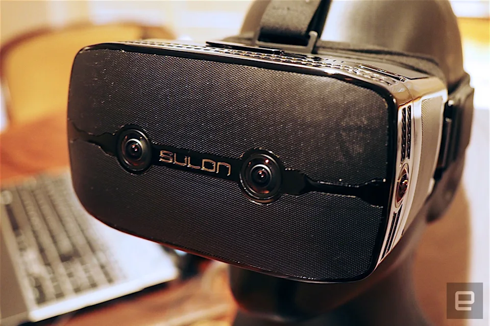

Sulon AR/VR headset
October 01, 2015
In 2015, I worked at Sulon Technologies, a Toronto-based startup focused on developing a mixed AR/VR headset. The device concept was innovative, capable integrating both augmented and virtual reality. As the lead SLAM developer, I implemented a multi-camera visual SLAM system optimized to run efficiently on the device's low-end CPU. Through various optimization techniques, we achieved high-frequency positioning, pushing the boundaries of what was possible at the time.
There is a cool demo of the system, presented at CES.